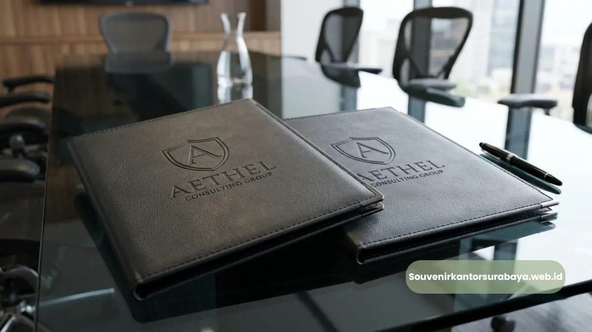
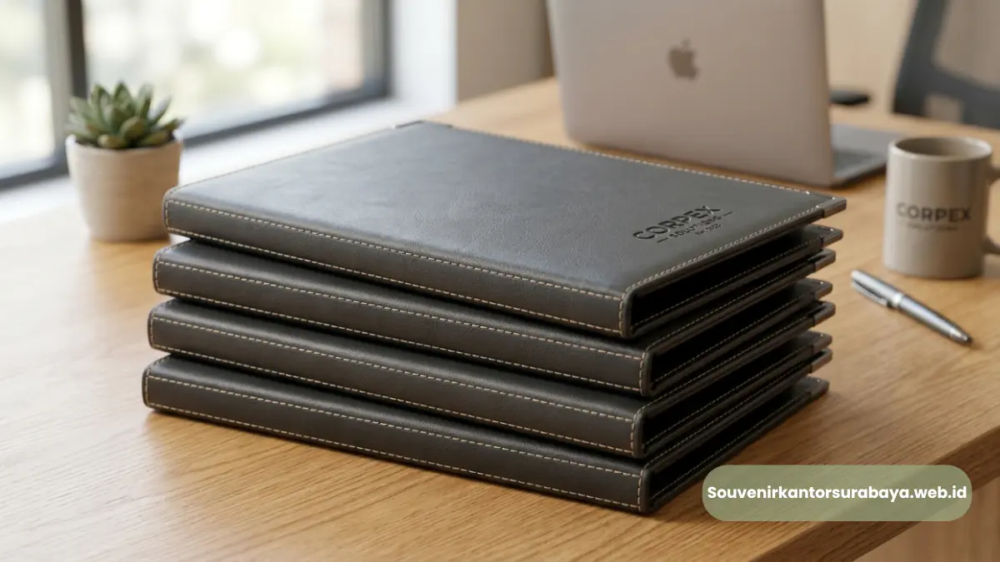
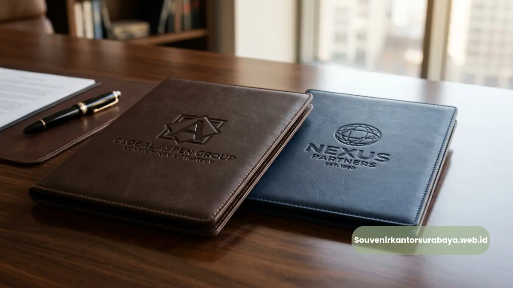

Corporate map folder kulit sintetis premium untuk kegiatan korporat eksklusif di Surabaya.
- Apa yang Membuat Map Folder Kulit Sintetis Disebut Premium?
- Apakah Ketebalan Bahan Memengaruhi Kualitas Map Folder?
- Apa Perbedaan Kulit Sintetis Premium dan Standar?
- Apakah Harga Map Folder Premium Selalu Lebih Mahal?
- Bagaimana Cara Merawat Map Folder Kulit Sintetis Premium?
- Bagaimana Cara Mendapatkan Map Folder Kulit Sintetis Premium untuk Perusahaan Anda?
Map folder kulit sintetis premium adalah map dokumen berbahan sintetis dengan kualitas tekstur, ketebalan, dan finishing yang lebih tinggi dibanding jenis standar, sehingga memberikan kesan lebih mewah saat digunakan dalam kegiatan korporat.
Bagi perusahaan di Surabaya yang mengutamakan kesan eksklusif di setiap pertemuan bisnis, pemilihan material premium pada map folder menjadi salah satu faktor yang turut diperhatikan.
- Map folder premium memiliki tekstur dan finishing yang lebih halus.
- Ketebalan bahan pada versi premium umumnya lebih tinggi dari versi standar.
- Warna dan jahitan pada map premium cenderung lebih rapi dan presisi.
- Perawatan yang tepat membantu memperpanjang usia pakai map folder.
- Cocok digunakan untuk kebutuhan korporat yang mengutamakan kesan eksklusif.
Apa yang Membuat Map Folder Kulit Sintetis Disebut Premium?
Map folder kulit sintetis disebut premium karena menggunakan bahan dengan tekstur lebih halus, ketebalan lebih tinggi, serta proses finishing yang lebih rapi dibanding jenis standar pada umumnya.
Faktor lain yang turut menentukan kategori premium adalah kualitas jahitan pada tepi map, kerapian aksesori seperti resleting atau kancing, serta konsistensi warna pada permukaan bahan.
Perusahaan yang menggunakan map folder premium dalam kegiatan korporat umumnya ingin menampilkan kesan bahwa mereka memperhatikan kualitas hingga ke detail terkecil, termasuk perlengkapan yang dibawa saat rapat kerja dengan klien maupun mitra strategis.
Apakah Ketebalan Bahan Memengaruhi Kualitas Map Folder?
Ketebalan bahan pada umumnya memengaruhi kualitas map folder karena bahan yang lebih tebal cenderung lebih tahan terhadap gesekan, lipatan, dan penggunaan jangka panjang dibanding bahan yang tipis. Map folder dengan bahan lebih tebal juga cenderung mempertahankan bentuknya lebih baik meski sering dibawa berpindah tempat dalam aktivitas kerja sehari-hari.
Apa Perbedaan Kulit Sintetis Premium dan Standar?
Perbedaan utama kulit sintetis premium dan standar terletak pada tekstur permukaan, ketahanan terhadap goresan, serta detail finishing seperti jahitan dan aksesori pelengkap. Kulit sintetis premium umumnya memiliki lapisan yang lebih halus dan seragam, sementara versi standar cenderung memiliki tekstur yang lebih sederhana namun tetap fungsional untuk penggunaan sehari-hari.
- Tekstur permukaan: premium cenderung lebih halus dan konsisten warnanya.
- Ketahanan goresan: bahan premium umumnya lebih tahan terhadap goresan ringan.
- Finishing jahitan: map premium memiliki jahitan tepi yang lebih rapi.
- Aksesori pelengkap: resleting atau kancing pada versi premium biasanya lebih presisi.
Baca Juga
Apakah Harga Map Folder Premium Selalu Lebih Mahal?
Harga map folder kulit sintetis premium dapat bervariasi dan umumnya lebih tinggi dibanding versi standar, tergantung pada kualitas bahan, tingkat kerumitan desain, dan jumlah pesanan. Meski demikian, selisih harga tersebut sering dianggap sepadan dengan daya tahan dan kesan visual yang dihasilkan, terutama untuk kebutuhan korporat jangka panjang.
Bagaimana Cara Merawat Map Folder Kulit Sintetis Premium?
Cara merawat map folder kulit sintetis premium meliputi membersihkan permukaan secara berkala dengan kain lembut, menghindari paparan panas berlebih, serta menyimpan map di tempat yang tidak lembap agar bahan tidak mudah rusak.
Perawatan yang tepat dapat membantu mempertahankan tampilan dan fungsi map folder dalam jangka waktu yang lebih lama.
- Bersihkan permukaan dengan kain lembut secara berkala.
- Hindari menyimpan map folder di tempat yang lembap.
- Jauhkan dari paparan panas atau sinar matahari langsung dalam waktu lama.
- Simpan dalam posisi datar untuk menjaga bentuk map tetap rapi.
Bagaimana Cara Mendapatkan Map Folder Kulit Sintetis Premium untuk Perusahaan Anda?

Tumpukan map folder kulit sintetis premium dengan jahitan tepi yang rapi dan presisi.
Perusahaan di Surabaya yang membutuhkan map folder kulit sintetis premium untuk kebutuhan korporat dapat berkonsultasi langsung melalui souvenirkantorsurabaya.web.id mengenai pilihan bahan, desain, dan jumlah pesanan yang sesuai kebutuhan.
Tim kami siap membantu memastikan produk yang diterima sesuai dengan standar kualitas yang diharapkan perusahaan Anda.
Map folder kulit sintetis premium menjadi pilihan tepat bagi perusahaan yang ingin menampilkan kesan eksklusif dan profesional dalam setiap kegiatan korporat.
Dengan kualitas bahan yang lebih baik dan perawatan yang tepat, map folder ini dapat digunakan dalam jangka waktu panjang. Konsultasikan kebutuhan map folder kulit sintetis premium perusahaan Anda melalui souvenirkantorsurabaya.web.id.

Hawa Nadira
Tim penulis CorporateGifts ID berfokus pada strategi souvenir kantor, merchandise korporat, dan inovasi brand untuk klien B2B.
Keahlian: Branding perusahaan, produksi souvenir, paket event, desain materi promosi.
Artikel Terkait

Provider Map Folder Custom Logo Perusahaan Surabaya
Provider map folder custom logo perusahaan Surabaya melayani pembuatan map kulit sintetis eksklusif cetak embos, sablon, dan hot print.
Baca Selengkapnya
Vendor Map Folder Kulit Sintetis Rapat Kerja Surabaya
Vendor map folder kulit sintetis rapat kerja Surabaya menyediakan perlengkapan dokumen meeting korporat dan souvenir kantor custom logo.
Baca Selengkapnya
Paket Map Folder Kulit Sintetis untuk Rapat Kerja
Paket map folder kulit sintetis untuk rapat kerja menyediakan perlengkapan meeting lengkap berisi map, notes, pena, dan slot kartu nama.
Baca Selengkapnya